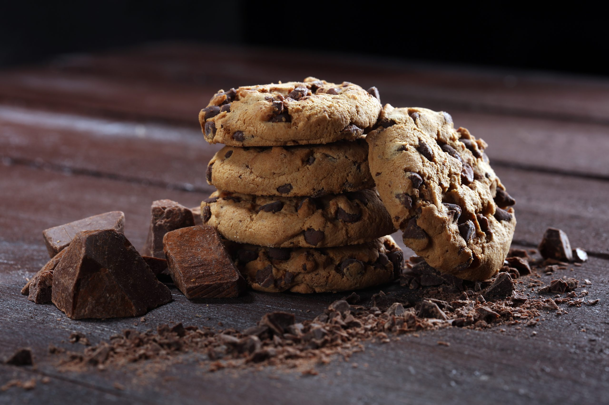

🍪 Cookies Americani

Descrizione
I cookies americani sono biscotti morbidi dentro e leggermente croccanti fuori, arricchiti da irresistibili gocce di cioccolato. Perfetti per la colazione o una merenda golosa.
Ingredienti
- 230 g di burro morbido
- 200 g di zucchero di canna
- 100 g di zucchero semolato
- 2 uova
- 1 cucchiaino di estratto di vaniglia
- 400 g di farina 00
- 1 cucchiaino di bicarbonato
- 1/2 cucchiaino di sale
- 300 g di gocce di cioccolato fondente
Procedimento
- In una ciotola monta il burro con lo zucchero di canna e lo zucchero semolato fino a ottenere una crema chiara e spumosa.
- Aggiungi le uova una alla volta e l’estratto di vaniglia, mescolando bene.
- Incorpora la farina setacciata con il bicarbonato e il sale, mescolando fino a ottenere un impasto omogeneo.
- Aggiungi le gocce di cioccolato e mescola con una spatola.
- Con un cucchiaio forma delle palline e disponile su una teglia rivestita di carta forno, ben distanziate.
- Cuoci in forno preriscaldato a 180°C per 10-12 minuti finché i bordi saranno dorati ma il centro ancora morbido.
Note e Consigli
- Per cookies più morbidi, togli dal forno appena dorati: continueranno a cuocere leggermente fuori dal forno.
- Puoi sostituire le gocce di cioccolato fondente con cioccolato al latte o bianco.
- Si conservano fino a 5 giorni in un contenitore ermetico.
⬅ Torna alla Home